Roles
Founder & CEO, Make&Model
As the Founder and CEO of Make&Model, I hired and spearheaded our team in our work executing on innovative projects across various domains, notably achieving an Emmy award for one of our clients and leading many through critical growth phases. I'm a leader who cares deeply about personal creative development, growth, and in fostering innovation and collaboration across teams. I founded this services firm to focus on mission-driven work, and pairing that with my background in product lead us to have many opportunities to work on critical and innovative challenges bringing positive change to both society and the environment.
 

 

Director of Design
After working with the founders of Flywheel Sports - a former top competitive spin cycling studio with locations around the world - to redefine critical technical and service design aspects of their customer experience, I'd find myself working with the same team on their new venture. My first mark was to run a sequence of design sprints that would become the first phase of their product, and I'd later join the team full time as their Director of Design. During my time there I directly contributed on product design, user research, usability testing, and paved the way forward for this new team to bring the product to an international market.
Partner & Creative Director
In 2013, only a year later after starting Dobot, I sold it to DockYard and onboarded as Partner and Creative Director. I would eventually co-lead a team of nine designers and twelve engineers. We completed multi-million dollar projects for clients like McGraw Hill Education, NASDAQ, Society of Grownups/Mass Mutual, IDEO, Flywheel Sports, and America's Test Kitchen. After overseeing the team expansion and training my successor, I resigned to embark on a journey to explore the concept of a impact driven design studio, which eventually materialized as Make&Model.
Founder
My second business was a Cambridge, MA-based boutique design and illustration studio. I led the creation of interactive animated web comics, organized pillar Boston design community events, and art-directed animations, photoshoots, and even music videos. While we focused largely on full interactive media experiences, we also performed product design services ranging from innovative in-store shopping to software for new wifi-first cellular devices.
Education
- BFA, Graphic Design - 2008 Montserrat College of Art Awards: Excellence in Graphic Design
- Diploma, Information Technology - 2004 Pathfinder R.V.T.H.S. Awards: Excellence in Geometry, Physics, and Information Technology
Writing & Speaking
- Design for Offline NetMag & Creative Bloq, Jul 2017
- Voice of InterConnect: An Offline First Mobile Web App Offline Camp Medium Publication
- Slides: Offline First The New Builders: Ideas on Tap, Las Vegas NV 2017
- Getting Started With Offline Design Patterns Offline Camp Medium Publication
- Offline/Low-bandwidth UX Design Patterns Offline Camp Medium Publication
- Design for Ember NetMag & Creative Bloq, Dec 2015
- Talk: Designing for Single Page Apps EmberConf, Portland OR 2015
- Panel: UX or Brand? Panel at UX Fest 2013
- Talk: On Selling Design NEPHP & UX
- Talk: What UX actually, really is. Boston Webinno
Events
-
Founder & organizer of UX Camp
2014–2018 (New York, California, Maine)I started UX Camp during my employment at DockYard, and carried it forward with me through Make&Model. It is a wonderful event, and would be a pleasure to bring back wherever I'm at next.
Fundraising, sourcing speakers and workshop coordinator, creating event schedules and fallbacks, sourcing musical artists, venue, catering and marketing for ticket sales
Leading the events programming, working with volunteers and collaborators to keep smoother operations
⟶ 🥁 UX Camp. -
Co-founder & organizer of Offline Camp
2015-2019 (Oregon, New York, Berlin)Offline Camp was an event that assisted in the popularization of the need to address low-to-no bandwidth situations within software and web applications. Primary functions: Website, Fundraising, “Camp Counselor”, Firemaster, Werewolves Director, Writer
⟶ 🦖 Offline Camp. - Past organizer of meetups: UX Boston, UX East, UX Berkeley, UX San Francisco, UX Happy Hour: Boston & DC
Managing Philosophy
I believe in a collaborative and inclusive design experience. My teams thrive by setting aside personal egos to create space to fully appreciate their teammates' perspectives, disciplines, and operational modes. Our actions are not motivated by personal convenience, but by the betterment of our team. We lift each other up.
A resume or portfolio cannot fully capture what someone can contribute to a team; this must be observed and experienced over time. Teams gel or fail to do so based on real collaboration, not through activities like foosball or escape rooms, which I view as battlegrounds for proxy wars among those struggling with collaboration. Whether describable or merely felt, team members may not always understand the origins of their challenges and can easily become victims of their own projections. As designer-detectives, this situation won't persist; we identify and tackle challenges through examination, testing, learning, and building. We do this for ourselves, but also for the betterment of the team.
Although we are not family, our collaborative work not only sustains us but also supports our families. It is important to remember why we are there, and why our teammates are there.
The common mantra "strong opinions, held lightly" doesn't adequately describe the quality of engagement I seek in teams. It can still result in the loudest voice prevailing over the best idea. Team members must be resilient enough to mindfully adopt different perspectives, letting go sufficiently to truly reconcile with the team's needs.
I think of it as active reconciliation, a skill that we, as designers, should already be proficient in during the convergence stage of our external work.
I believe that established trust, openness, kindness, drive, and a positive team mentality enables us to flow together and achieve more than we could ever dream of alone. In my opinion, career advancement for all members of product teams should depend on these interpersonal qualities as well as their individual hard skills.
Design Team Principles
- Designers act as detectives.
- Designers serve as caretakers.
- Designers nurture their environments.
- Designers study conflict without instigating it.
- Designers must possess strong emotional intelligence and self-awareness.
- Designers must maintain an active curiosity and engage deeply in the work of their teams.
Process Principles
- I implement continuous ideation with regular cross-team sessions. Ad hoc sessions are routinely held across design teams to support new initiatives and steer each designer towards success.
- The process is iteratively evolving, designed to serve the team exclusively. We avoid engaging in processes that serve no purpose beyond their mere existence. This rule permits necessary pauses in the process, whether it be a scheduled brainstorming, estimation session, or another activity the may have limited value at the time.
Design Principles
- I maintain that there are no universal design principles; instead, we should develop a unique set to guide our team's decision-making. Many common design principles are subjective and vary in meaning depending on the situation. Instead, I believe our principles should be crafted based on customer needs and our business positioning. For example, "keep it simple" is subjective; to a customer, it might mean presenting all controls simultaneously rather than nesting them within menus or using other quick-search solutions.
- Adhering to the principle of reciprocity: if a solution feels like a shortcut, it likely is. We always consider the forces that create this solution, recognizing whether it has arisen from customer observations, is addressing unique business pressures, or is merely saving an individual some time.